-
Fully automated cyclic planning for large-scale manufacturing domains.
Masataro Asai Univ. tokyo
Alex Fukunaga (Assoc. prof, advisor)
Hi everyone. On Monday I presented at KEPS about problem decomposiiton, but that work was made for integrating with this work actually.
Now I bliefly describe the mass-manufacturing problem first. This problem, called CELL-ASSEMBLY, was our primary problem of interest, and solving this problem was our first short term goal last year. However, the method developped for the problem was found to be general, and indeed applicable to other domains.
1 Motion Planning in Cell Assembling System
- It's NOT about spatial search, all about actions !
- Require professional human resource w/o automated planner
The task is to optimize the flow and the timing of motion of Robot arms. Note that it's NOT about spatial search, all about actions. We use temporal planners to solve the problem, or combine classical planners with postprocessing sheduler.
Before applying the automated planning, it requires very expensive professional human resource.
2 CELL-ASSEMBLY
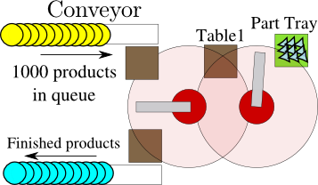
gripper + woodworking + logistics.
- : many products, with : parts
- to complete each product, multiple operations –
- moves to carry without collision.
Eventually, the problem was formulated into a PDDL problem which is similar to gripper, plus woodworking, plus logistics.
- There are many products in the conveyor that should be assembled with parts.
- To complete each product, multiple assembling operations are required. Assembling should be done on the tables.
- Finally, the robot arms move in order to transport the products while avoiding the collision.
2.1 Planner's Task
Assembling recipes are provided in the problem
All products use the same recipe (Identical)
… (we tried to relax it in the KEPS paper!)
.
Primary Task : optimizing the arm motion
In this domain, assembling recipes for the products are provided in the problem. Where to do what in what order, is already specified.
Therefore the primary task of a planner is to optimize the arm motion.
2.2 High degree of symmetry
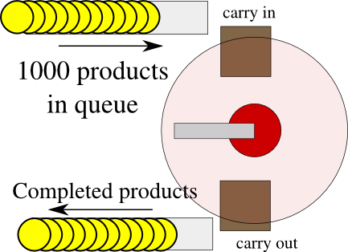
Figure 1: Simplest problem with many product
The difficulty in this problem is its high degree of symmetry, There might be hundreds of thousands of products that should be assembled, not only in PDDL problem but also in the realistic assembly systems. Symmetry is the main cause of difficulty in some domains such as gripper. The problem gets exponentially difficult because of the high branching factor regardless of the difficulty of each subproblem.
2.3 No Existing Planner Can Solve This Practical Problem!
- symmetry breaking
- ＜-＞ ANOTHER METHOD
.
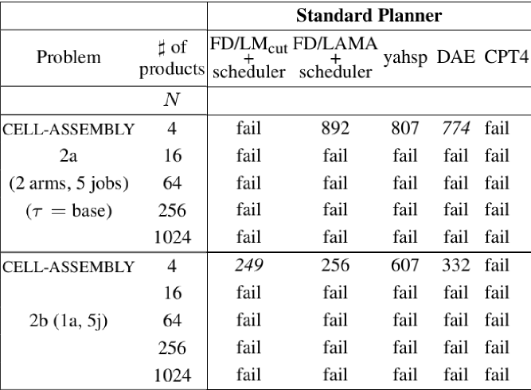
Indeed, any state-of-the-art planners failed to solve cell-assembly problem instances with the number of products around 16. This is expected results but unacceptable!!
- There already exists a technique called symmetry breaking.
- However our method, described from now on, is a generic method to tackle this problem from another point of view.
3 Summary of Contribution
- Automated Framework to Form a Loop Structure
First attempt: form and find the best cyclic plan
- General domain/problem analysis method (owner/lock)
the basic method is applicable to other domains
- Solved EXTREMELY large PDDL instances (inc. IPC domains!)
This is clearly beyond state-of-the-art planners
Now, here is the Summary of Contribution.
- Firstly, we developped a new Framework for cyclic planning
- This is a first attempt, maybe, not sure, to form and find the best cyclic plan automatically.
- Secondly, we developped a general domain/problem analysis method for it
- and the basic method is applicable to the other domains.
- Thirdly, it actually solved EXTREMELY large PDDL instances
- that are beyond the ability of state-of-the-art planners. It's ability is not limited to CELL-ASSEMBLY problem, and it actually solves Large IPC problem (and variants).
4 Strategy: Cyclic Planning
One loop – completes one product / all products to the next steps
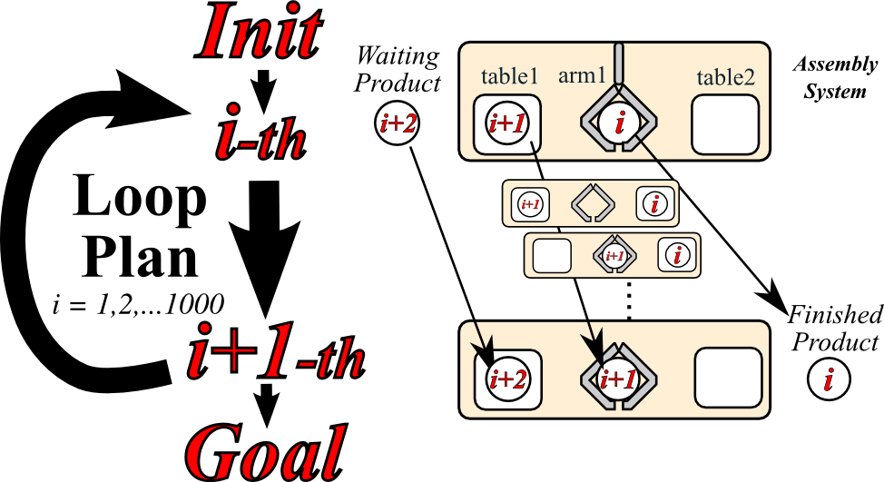
The strategy we adopted for solving those problems is a cyclic planning framework. Running one loop completes one product and moves the partially-assembled products to their next steps.
4.1 Loop unrolling ＜-＞ Loop rolling
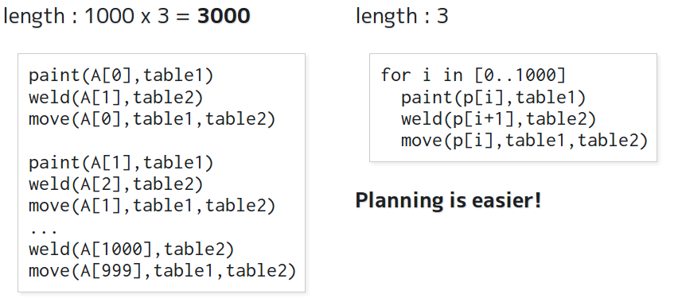
The idea is essentially the following. Assume there are at least 3 actions needed to complete one cycle, and also there are 1000 products. Normally we have to compute a plan with length 3000. However, the length of the plan actually required to be solved is just 3. And the planning is far more easier than the original problem.
4.2 Interactions between subproblems
But do not misunderstand that each cycle is just solving a subproblem independently. Each cycle actually assembles multiple products, so it's combining and interleaving each subproblems in a very complex manner.
5 Loop : representation
Loop ⇔ Beginning of a Cycle
Now let's go further into how we represent a loop. A loop plan is a plan to execute one cycle. Since it is a plan, each cycle has it's own starting state. This is important because it means, conversely, each starting state has several loop plans.
5.1 Steady State Si
Beginneing of the cycle
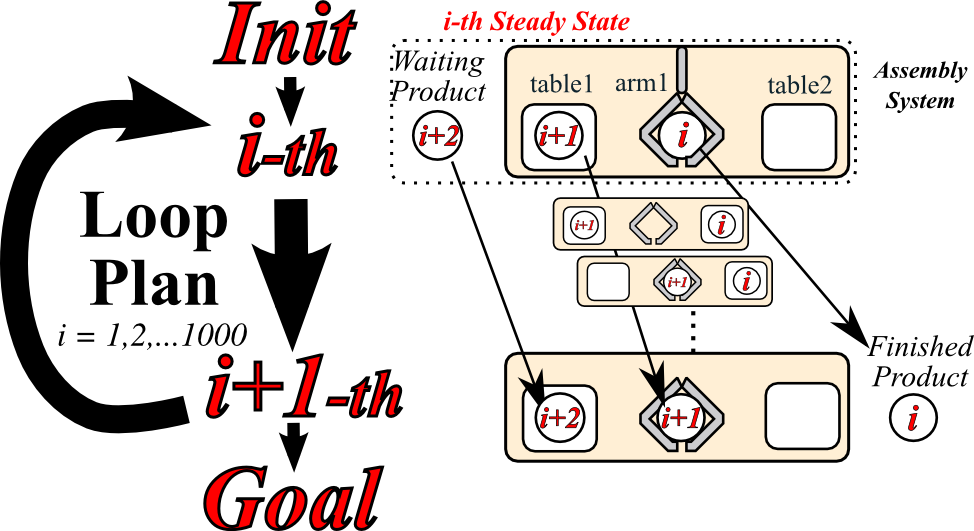
We define this beginning of the cycle as a steady state, indexed with i.
In cell-assembly example, there are some partially processed product i,i+1,i+2, and in the next cycle, they go to the next manufacturing step. In a cycle, there are multiple intermediate states. The objects in the rest of the world, such as arms and tables, are restored to the original state.
5.2 Unrolling
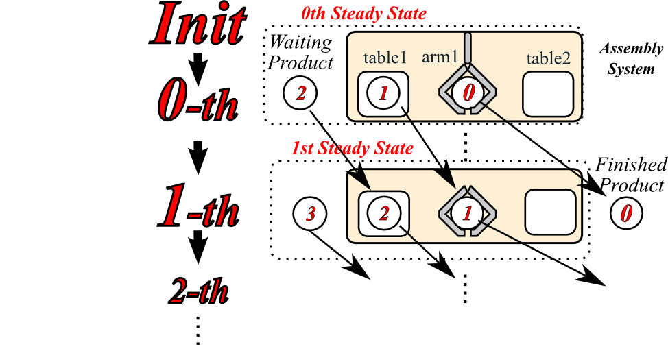
Finally, we can unroll the loop plan by substituting the indexed variables with actual objects, just copying the same plan.
Now the goal is, automatically building these kinds of steady states and getting efficient loop plans.
6 Difficulty
It is not trivial to detect the information
necessary for constructing an efficient loop.
It is not trivial to detect the information necessary for constructing an efficient loop. There were two challenges here.
6.1 Difficulty
- WHICH STATES are the steady state?
= which state can form a loop?
Checking ALL states from Init – impractical
- Which SS yields a cost-efficient loop plan?
Difficulty : (# of SSs) x (evaluation time for each SS)
(# of SSs) – still exponentially large (e.g. 5x106)
(expensive evaluation) – loop plan : calls FastDownward each time
Even if we have a finite set of steady states,
checking ALL steady states is again impractical!
The first one is about which state is a steady state. This is the same question as which states can form a loop. Checking ALL states reachable from the initial state is impractical because the number of states is exponentially large in most planning problems.
The second issue is that we have to get the cost-efficient loop plan. This can further be decomposed into two problems: The first one is the number of steady states. This might be again exponentially large, and actually it was. The second one is that the evaluation of each steady state is expensive, because each evaluation calls standard planner like Fast Downward to obtain the loop plan and get it's length. Therefore, checking ALL steady states is impractical.
7 Process – to Enumerate SSs
Observation:
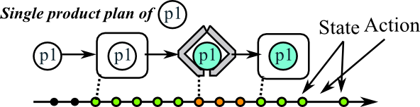
3 processes (Attatch ＞ Carry ＞ Attatch)
There is at most 1 product in a process.
We developped a notion of process to efficiently construct a steady state.
We first build a plan for assembling a single product by choosing one object in the original problem. Then, in human level understanding, the result plan consists of several segments, so-called processes. There is at most 1 product in a process. In this example, there are 3 processes.
So how can process be detected?
7.1 Process = Unit Capacity Resource
assemble @ table1 ≈ use table1 (resource)
- Process = {table, machine, painter} : places
- Which predicate specifies a resource? is not trivial
It's difficult even for human! w/o analysing PDDL
semantically indistinguishable – (X A Y)
| seems like.. | |
|---|---|
| (color X red) | not a place |
| (at X table) | a place |
| (P X Y) | ?????? |
A process is a set of unit capacity resources. For example, assembling the product at table1 consumes the table1. It should be released if each process completes.
- Then each process corresponds to a set of unit capacity resources. Informally speaking, in cell-assembly, they are places like tables, machines and so on.
- However, which predicate specifies a resource? is not trivial. For example, for human, the object red doesn't seem like a place, and table seems like a place, however no one actually knows if they represent a place or not, until we analyse the actual PDDL problem, especially when it looks like the third one, (P X Y). It's the same for a planning agent because, semantically they all look the same! just (P A Y)!
Now we want to let the planner do it automatically.
7.2 Detection mechanism
Question Is a predicate o= (P X Y Z…) a place?
Answer find a lock predicate l that satisfies some condition with o.
If it exists, it is a place.
Condition : for all action a,
1 . If a occupies a place, a should check if the place is not in use, and a should acquire the lock.
2 . If a leaves the place, release the lock.
The detection proceeds as follows. We need to know if a predicate o= (P X Y Z…) is a place. To answer that, we search for the corresponding lock predicate l that satisfies both condition below over all actions.
The first one is, informally speaking, If a occupies a place, a should check if the place is not in use, and a should acquire the lock. The second one is, if a leaves the place, release the lock.
Next, let's see how the predicate "at" differs from the predicate "color" and why the former is a place.
7.3 What's the difference?
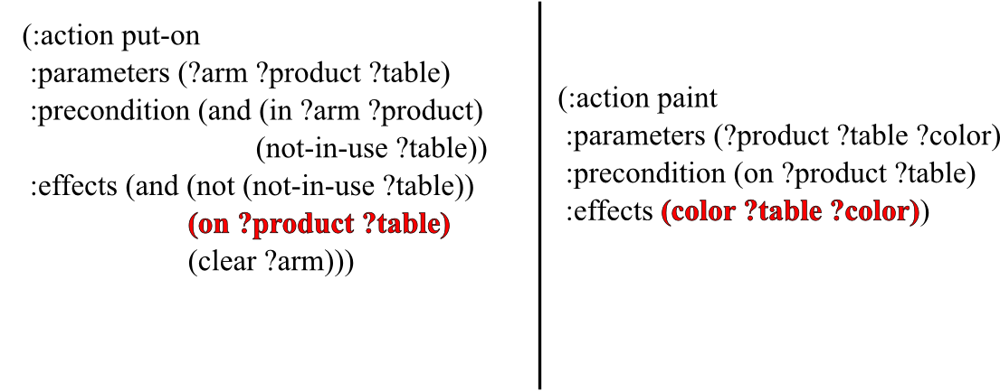
Puts a product in an arm onto a table
Paint a product
Now here are 2 actions "put-on" and "paint". Basically, put-on puts a product in an arm onto a table. Here, the predicate "(on product table)" satisfies the previous rule…
7.4 What's the difference?
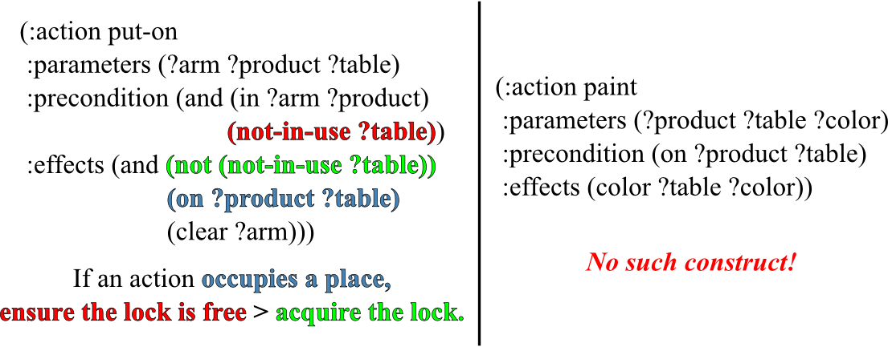
because there is a predicate "(not-in-use ?table)" which matches the condition. Once we found it, we should test it for all actions. Contrarly, in the action "paint", the predicate "color" do not have such constructs, so it is not a place.
7.5 Detects ANY places possible
hiralious example, but…
The last example here is something no one even know how to read. However the machine can still recognize it because the detection method is general and automated.
7.6 ACP : Automated Cyclic Planner
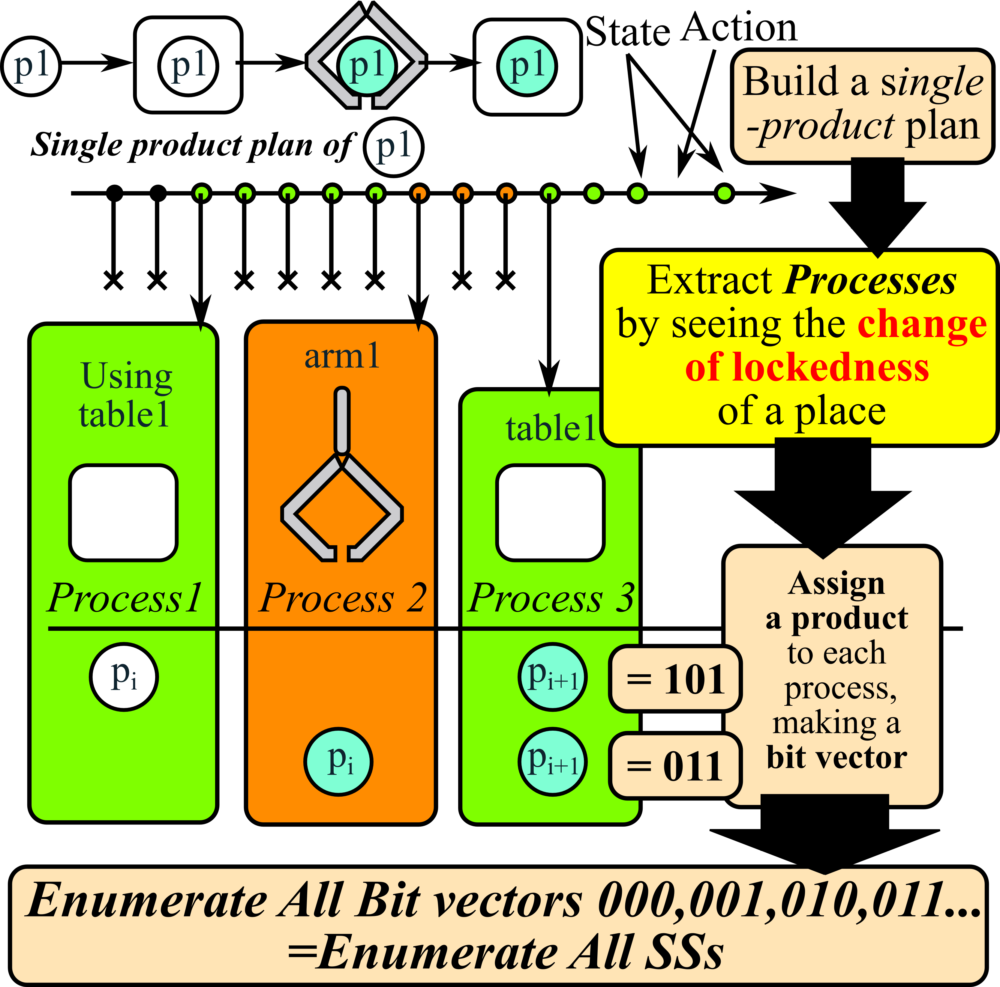
Now we finally get to summarize our framework, Automated Cyclic Planner ACP. Firstly, it solves a single product plan. Next it detects the change of resource usage in the plan, and make it a process. Once we get processes, assignment of products to each processes is represented by a bit vector, which is very easy to enumerate.
7.7 Infeasibility/Deadlock Detection
Using compact representation of steady state,
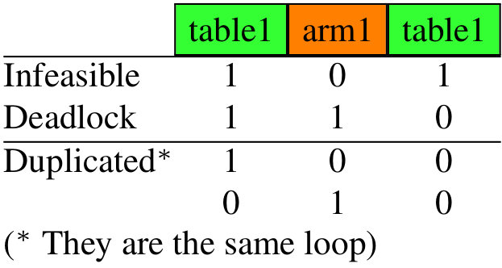
Reduced # : 5x106 → 677
We further apply a infeasibility and deadlock detection in this abstract representation of the cycle. It efficiently reduces the number of steady states, for example, from 5x106 to 677. After these pruning, we obtain many loop plans for each steady state by solving the loop problem with underlying planner, fast downward.
8 Unrolling
Now Finally get back to this slide again. We can unroll the best loop plan.
9 Experiments
- 5 CELL-ASSEMBLY problems (each with 4,16,64,256,1024 products)
- Woodworking (each with same 4,16,64,256,1024 parts)
- Barman (each with same 4,16,64,256,1024 cocktail)
The experiments were done on 3 domains, CELL-ASSEMBLY, minimally modified Woodworking, and Barman. There are 5 kinds of problems for CELL-ASSEMBLY, each corresponds to the different assembly systems. For these 7 kinds of problems, there are 5 variants, with varying number of products, parts, or cocktails.
9.1 ACP vs …
- 5 temporal planners
- FD/LAMA2011, FD/LMcut (+ min-slack scheduler)
- yahsp2, DAEyahsp, CPT4
- best results of Simple Cyclic Planner (SCP)
- 5 base planner x 9 configuration
In these problems, ACP was compared with 3 temporal planners and 2 classical planners combined with minimum slack postproessing scheduler.
We also find that comparing ACP with standard planners is not sufficient, because we can easily come up with trivial cyclic planner, called Simple Cyclic Planner SCP, which just solves the K-product problem and just concatenate the result plan. We get the best out of 5 times 9 = 45 configuration of SCP and compare it with ACP.
9.2 Simple Cyclic Planner
Solve K = {1 … 9}-products plan
with 5 planners (2FDs,yahsp,DAE,CPT)
get the average makespan per product (K-makespan/K)
SCP solves 1 to 9 products plan. Since the total number of products such as 16 and 64 might not be evenly devided into K-product subproblems, so we get the average makespan per product.
9.3 All standard planners fails
similar results on other domains
Now the results. As we showed in the beginning, the standard strips planner has failed to solve problems because of the high branching factor and the memory limit.
9.4 Average makespan compared to SCP / lower bound
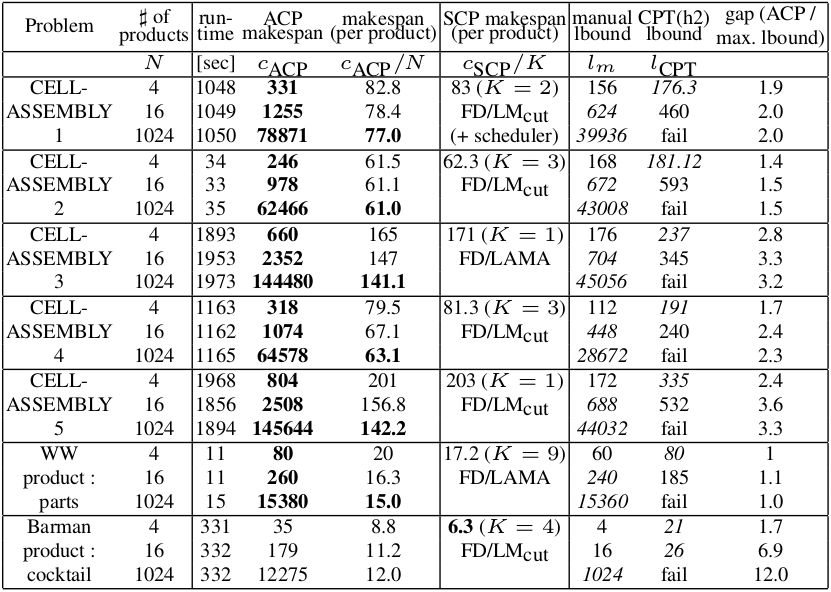
And here are the comparison between ACP, SCP and the lower bound obtained by CPT4. You would notice that the makespan per product is converging to some value in ACP. This is because the bad plan before the first cycle and after the last cycle is getting amortized.
In the lower bound analysis, we used CPT4, an optimal temporal planner by vincent vidal. However, it actually failed to even compute the first lower bound. So we analysed the bottolneck of each cycle by hand and multiplied it by the number of product and made it a manual lower bound. Eventually, the gap was around 3 in cell assembly and woodworking.
It was not good in Barman domain, but this is because ACP cannot handle multiple resources currently.
9.5 Domain Independence
Too much assumptions & strong requirements?
The restriction might seem quite strong, but the same program solves the other IPC domains! acutually!
I like to do these kind of bizarre stuff!
10 Summary of Contribution
- Automated Framework to Form a Loop Structure
First attempt: form and find the best cyclic plan
- General domain/problem analysis method
the basic method is applicable to other domains
- Solved EXTREMELY large PDDL instances
beyond state-of-the-art planners
Solve Large IPC problem (and variants) correctly
Now I repeat the Summary of Contribution.
- Firstly, we developped a new Framework for cyclic planning
- This is a first attempt to form and find the best cyclic plan automatically.
- Secondly, we developped a general domain/problem analysis method for it
- and the basic method is applicable to the other domains.
- Thirdly, it actually solved EXTREMELY large PDDL instances
- that are beyond the ability of state-of-the-art planners. It's ability is not limited to CELL-ASSEMBLY problem, and it actually solves Large IPC problem (and variants).
10.1 Is it useful?
No one doesn't even try to solve that large problems!
Dirty attempt – lessons might be learned
Global lock/owner in STRIPS – it may find a way to use
One thing I want to emphasize is that the fact no one doesn't even try to solve that large problems!
We know it's impossible, but even solving problems dirty might help you understand the behavior of such kind of domains.
But at least, the automated detection of global lock and its owner in STRIPS domain might be useful, though I'm not sure about its real value.
10.2 So, what's next?
- Categorizing the objects into identical groups (KEPS paper)
- several mixed-orders becomes available (100 x A / 200 x B)
- (100 loops A) + (200 loops B)
- (100 loops AB) + (100 loops B)
- Categorization -＞ Checks serial decomposability / not.
- check if a resource is released or not
- consider the "release" action of the resources as an abstract action
- Unit capacity -＞ arbitrary capacity
- Detect numbers in a problem, automatically?
- up-converting STRIPS to ADL (opposite to the common strategy)
Thanks for listening!
There is bunch of tasks I have to apply this framework to even larger range of domains, but not sure I can do it successfully. Maybe just beaten by symmetry breaking technique I am also interested in.
Thanks for listening!